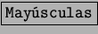
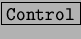

Selección de celda.
Las celdas dentro de la hoja se pueden seleccionar bien usando el ratón
o con el teclado. Con el ratón se presiona en la celda de inicio y, sin
soltar, se extiende la selección moviendo el ratón hasta llegar a la celda
final que se quiere seleccionar. Con el teclado, se posiciona con las teclas
de dirección sobre la celda a seleccionar y se presiona la teclas .
Sin soltar dicha tecla se seleccionan las celdas deseadas con las teclas de
dirección.
Para seleccionar celdas que no sean contiguas se utilizará el ratón y la
tecla . Se selecciona el primer rango de celdas o una sola, y a
continuación se seleccionan las celdas o rangos deseados sin soltar la
tecla .
Para el caso en el que la selección de celdas quede fuera de las ventanas,
hay que hacer notar que el movimiento es automático y no se necesita
preocuparse hasta dónde llegar.
Las columnas y filas se pueden selccionar enteras si se presiona sobre
el rótulo de fila o columna.